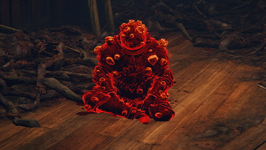
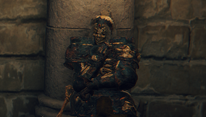
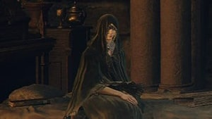
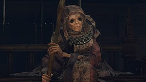
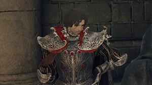
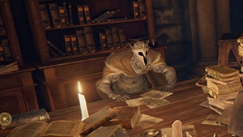
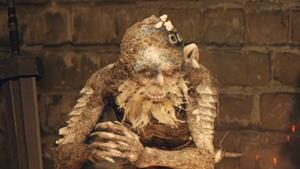

Queen Marika the Eternal

Queen Marika the Eternal is a background character in Elden Ring and Shadow of the Erdtree. She is the
current ruler of the Lands Between, and the one who shattered the Elden Ring. She is central to much of the
game's narrative and lore. She has many powerful Demigod offspring, who seek the Elden Ring's remaining
power.
Queen Marika is the vessel for the Elden Ring, and by extension the Greater Will. The runes that constitute
the Elden Ring represent the laws that govern the world, currently the Golden Order, which was founded by
Queen Marika. The Elden Ring was shattered into shards referred to as Great Runes, which are in the
possession of Marika's offspring.
Brother Corhyn

Brother Corhyn is a holy practitioner who will teach you practical faith-based Incantations in exchange for
Runes. You will encounter him once you've reached the Roundtable Hold.
D, Hunter of the Dead

D is a hunter of the undead who can be found where the Tibia Mariner boss is located, and later at the
Roundtable Hold. When you first encounter D, he will warn you that the nearby small town of Summonwater
Village has been taken over by a Mariner. If the player shows him Deathroot and takes him up on his offer of
introduction, he will mark your map with a red "Sending Gate" waypoint, indicating that it will take you to
the Beast Clergymen.
Dung Eater

Dung Eater is a fellow Tarnished who occupies a corpse ridden room in the Roundtable Hold. The spirit of Dung
Eater can be summoned for aid in battle by using Dung Eater Puppet Ashes. The Dung Eater is also available
as an NPC Summon when facing Mohg, the Omen and Morgott, the Omen King. Progress in his questline and
release him to be able to unlock his summon sign. He may also be encountered as an NPC Invader.
If you approach him with any Seedbed Curse in your inventory, he will give you the Sewer-Gaol Key and ask you
to find his real body beneath Leyndell. Dung Eater's real body can be found in the Subterranean
Shunning-Grounds. From the Underground Roadside Site of Grace, head out the door, turn left, slip past the
Omens and fall into the gap in the sewer grate. Head straight to the end of the tunnel, fight past three
Giant Miranda Sprouts, climb up the ladder and open the locked door on the opposite wall. You will need the
Sewer-Gaol Key to open this door.
Ensha of the Royal Remains

He will refuse to speak to the player, but instead stare at them. He is the servant of Gideon Ofnir.
After obtaining either half of the Haligtree Secret Medallion (Right or Left), Ensha becomes an NPC Invader
and ambushes the player the next time that they teleport to the Roundtable Hold. Defeating them rewards the
Clinging Bone and the Royal Remains Set, which must be obtained by returning to where Ensha was originally
standing, outside of Gideon Ofnir's room.
Fia, Deathbead Companion

Fia is a deathbed companion that you will find inside a small bedroom at the Roundtable Hold. Her embrace
will give you a special consumable that can increase poise called the Baldachin's Blessing, at the cost of a
debuff that slightly decreases your maximum HP. You can ostensibly come back for more if you happen to run
out of this consumable.
Finger Reader Enia

Enia is an ancient woman, wielding a massive club. She is known as the Finger Reader. Enia can help the
player draw out the power that lies within a remembrance of a powerful deity. Enia is different from the
nameless Finger Readers that you meet in different areas, Enia seems to know you, but for the Finger
Readers, their interests pique as they try to read what is written on your fingers. Enia also serves as a
direct interpreter of the Two Fingers, envoys to the Greater Will.
Knight Diallos

Diallos is a noble found at the Roundtable Hold, first mentioning that he's looking for his loyal servant,
but is later involved in a quest of his own.
Sir Gideon Ofnir, the All-Knowing

Gideon Ofnir is the leader of Roundtable Hold and a profound source of knowledge. He can be found most
commonly at his office, absorbed by an endless amount of books.
Smithing Master Hewg

Hewg is an imprisoned Misbegotten blacksmith that can be found at the Roundtable Hold. He will upgrade your
Weapons beyond the +3 level, as well as duplicating Ashes of War for a fee, provided you have the proper
Materials.